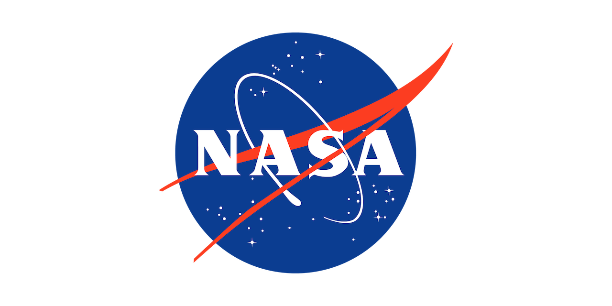

Overview
In our day to day lives we are hearing more about quantum computing and how it can fundamentally change how we process information, opening the door to processing information faster in completely new ways, or tackling up until now impossible to solve research questions. At this innovation lab, participants will work together, across disciplines to begin to conceptualize “now” possible real-world medical problems, like novel treatments for cancer.
Quantum computing is a cutting-edge computational paradigm that leverages the principles of quantum mechanics. This approach has the potential to introduce new computational methods capable of overcoming persistent hurdles to progress in biomedical research, providing new avenues for the study of complex biological questions. Biomedical data science integrates principles and techniques from computer science, statistics, mathematics, biology and medicine to extract meaningful insights and knowledge in order to advance our understanding of diseases (for example cancer), developing new treatments, and improving healthcare delivery. This field of science is critical to supporting advances in basic through clinical biomedical research, especially given the ever-increasing scale of data being collected as a result of rapidly advancing technologies and ever-expanding appreciation for the complexity of human biology relevant to disease development and progression.
Challenge
Quantum computing opens the door to new ways of thinking about biomedical research problems and new avenues of research. The challenge to participants is to brainstorm opportunities for research that prompt the development of quantum algorithms that address biomedical problems (e.g., cancer research) with a clear plan for simulating a demonstration of a quantum advantage for the novel approach over classical approaches to the same problem.
Through advances in quantum computing we can leverage the power and potential to today’s biomedical research problems.
- What are the research questions that are uniquely suited to quantum computing?
- How could quantum computing open a new frontier for biomedical research?
- How can quantum computing change how we process medical imaging and diagnostics?
- Can we identify and design new drugs using quantum computing?
- Can we gain new insights analyzing DNA sequence information using quantum algorithms?
The challenge, then, is to combine the expertise of diverse scientists and quantum experts who are unlikely to have worked together in the past to identify those biomedical and cancer research problems for which relevant real-world data exists and for which quantum algorithms can be adapted and optimized to address the problem.
Participant Selection Process
The CDSLU workshop organizing committee reviewed application materials and placed applicants into two tiers of participation. Tier 1 represents the core group of participants who will be actively involved in the bulk of the work and will participate in all activities. Tier 2 participants will have access to all the pre-workshop resources, be invited to the community Slack channel, and are welcome to view and comment on the final workshop presentations.
To place participants into either Tier 1 or Tier 2, the organizing committee carefully reviewed each applicant’s responses to required questions on the application form, including how applicants envisioned contributing to the workshop’s spirit of collaboration, open inquiry, and community-building.
With limited space in Tier 1, owing to the practical limitations of a virtual workshop setting, and hundreds of strong applications representing many different areas in astrobiology, science journalism, science studies, and science content creation, the committee worked to achieve a balance of expertise, career-stage, and backgrounds among Tier 1 participants. Participants in both tiers will have the opportunity to contribute input and insights towards the workshop’s goals.
